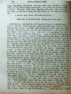
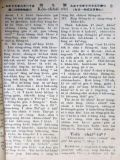
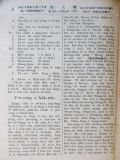
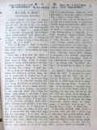
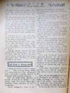

Languages
台文
｜
中文
｜
日本語
｜
English
字體
小
｜
中
｜
大
首頁
/
白話字數位典藏
白話字數位典藏全文檢索
查詢模式
選擇年代
清國時代(1885-1895)
日本時代(1895-1945)
戰後(1945-1969)
1885-1895
1896-1905
1906-1915
1916-1925
1926-1935
1936-1945
1946-1955
1956-1965
1966-1969
1970-1980
1980-1990
1990-2000
2000-2010
2010-
選擇文類
詩
散文
小說
戲劇
傳記
選擇作者
陳清忠
陳清義
編輯部
柯設偕
吳天命
明有德
偕叡廉
周天來
劉華義
王守勇
林茂生
陳添旺
王占魁
柯維思
賴仁聲
陳瓊琚
雪峰逸嵐
吳清鎰
郭水龍
蕭樂善
許水露
葉金木
陳金然
章王由
廖得
鄭連坤
潘道榮
楊士養
梁秀德
劉約翰
周淑慧
高金聲
林燕臣
黃六點
蔡愛義
許有才
主筆
巴克禮
郭朝成
陳鳩水
張基全
陳明清
陳能通
拾穗生
顏振聲
卓恆利
傳道局
胡文池
劉主安
鄭兒玉
陳芳本
康清塗
潘金聲
鐘天枝
Google Search
Yahoo Search
全部
刊名
標題
標題(教羅)
全文
全文(教羅)
作者
第134頁，共141頁(共2,805筆資料) 0.72131299972534sec
1
...
132
133
134
135
136
...
141
To Page
GO
文字列表
圖文列表
排序
日期
文類
刊名
作者
影像
[1925-7 芥菜子 文類-散文 作者-陳芳本/Tân Hong-pún]
(3)
咱看囡仔有著無？ [ LÁN KHOÀN GÍN-NÁ Ū TIOH2 BÔ? ]
咱看囡仔有著無？ 愛連荊女士teh講20世紀就是囡仔ê世界。今仔日ê傳教，猶久救大人，攏無致意救囡仔，按呢咱teh傳救道，beh建設天國佇地裡一款ê方法是不完全。請看（箴言22:6.）「著用道理教示細囝到老無倍」按呢thang知教示囡仔是真要緊，也是根本的傳教ê方法，就是家庭ê基礎教會ê地基，宗教ê大石磐。照咱所知北部教會今仔日論宗教教育thang講無啥teh設法。囡仔怎樣著救in？有5項：－ 1. 「囡仔kap大人平平是罪人」（羅馬5: 12.）人既然有罪，囡仔也是人。耶穌ê...
[1925-7 芥菜子 文類-散文 作者-陳清義/Tân Chheng-gī]
(3)
南勢番 [ LÂM SÌ HOAN ]
南勢番 這擺我去花蓮港赴奮興會，順機會我研究南勢番ê狀況，不止有趣味，taⁿ來排列寫佇下底，報予大家知影。 1. 論in ê祖先。In逐ê攏講毋知影，有一位ê博士去kā in抽血來研究，講是kap馬來族相同，按呢拍算是對南洋來khah大面，因為kap名稱也相合：佇花蓮港聽彼爿，逐ê攏叫in南勢仔。 2. 論in ê徛起。攏是平洋；In ê番社真清氣相，路真大條，埕真開闊，有竹圍、有樹真好看。厝，是用草起ê，低低；近來不止進步，有ê kah棟起，厝頂蓋鉛鉼不止...
[1925-10 芥菜子 文類-散文 作者-陳清義/Tân Chheng-gī]
(3)
論祈禱Ê要緊 [ LŪN KÎ-TÓ Ê IÀU-KÍN ]
論祈禱Ê要緊 人佇這世間，有身軀，有靈魂，兩項平平要緊。這個是咱信者所應該知--ê。身軀所著欠ê，就是食、穿、踮；這3項以外，猶有一項koh khah要緊--ê，就是空氣。這个空氣kap人生有大關係，拄拄親像水kap魚ê關係按呢！魚離水就死，人離開空氣也是按呢；這個;這個是人人所知影--ê.靈魂所著欠ê，就是上帝ê話，就是道，道，就是耶穌；按呢thang知耶穌kap咱人有關係。空氣會養飼人ê身軀，hō͘呼吸來thong到肺腑。耶穌會養飼人ê靈魂，予人倚靠伊來祈禱，...
[1925-10 芥菜子 文類-散文 作者-陳清忠/Tân Chheng-tiong ]
(3)
論死人KOH活 [ LŪN SÍ-LÂNG KOH-OAH2 ]
論死人KOH活 耶穌予死人koh活，佇福音書中有記3擺： 1. 予管會堂ê人Gâi-ló͘ ê查某囝koh活。馬太9： 2. 佇拿因予守寡婦人人ê囝koh活。路加7： 3. 予拉撒路koh活。約翰11： Gâi-ló͘ ê查某囝死了後無偌久，耶穌予伊koh活。 守寡婦人人ê囝死，經過一問日（按：應為一兩日），teh欲扛去埋葬，佇路中耶穌予伊koh活。 拉撒路已經死4日久，身屍已經發臭味，耶穌佇墓前叫一聲，隨時koh活對墓裡...
[1925-10 芥菜子 文類-散文 作者-康清塗/Khng Chheng-thô͘]
(3)
當殺爾慾 [ TONG-SAT NÍ-IO̍K ]
當殺爾慾 早時佇猶太國有兩个翁某予私慾刣死，就是亞拿尼亞kap Sat-hui-lat。按呢thang知私慾是咱ê對敵，咱若無thâi死伊，伊就欲刣死咱。Taⁿ咱第一要緊著刣死私慾。私慾逐人有，不過是濟少若定，喙是伊ê先鋒，目睭是伊ê利器，心是伊ê火藥庫；若無先予伊死，咱ê危險是到極。 1. 慾能生hāi-ok。萬項ê歹是對私慾生起來，困苦咱人。親像早時以色列百姓入迦南地ê時，起頭勢如破竹，予百姓死真濟，受真濟ê艱苦。咱人起頭無私慾ê時親像平平ê...
[1925-10 芥菜子 文類-散文 作者-蕭樂善/Siau Lo̍k-siān]
(3)
用信清氣心肝 [ ĒNG SÌN CHHENG-KHÌ SIM-KOAN ]
用信清氣心肝 用信清氣in ê心。」行傳16: 9 人若講我有信上帝，伊是失敗；若講我無信，彼人是成功。因為信是深沉奧妙；chī-chūi明白，chī-chūi有完全ê信？ 有記載講「清氣心肝ê人有福氣，因為in欲看見上帝。」這句話毋是叫人著出力來予心肝清氣，就是對信上帝來清氣心肝。事先信，後來對信來清氣。這句話真攪擾咱信主ê兄弟kap姊妹。咱信主tio好好，對信就會得著救，ná使著清氣心肝ah！Taⁿ欲看見上帝毋著清氣目睭？設使咱久久來等來ǹg望kiám袂看見mah！無，著對信來清氣心肝，有清氣心肝...
[1925-10 芥菜子 文類-散文 作者--/-]
(3)
教會自養 [ KÀU-HOĒ CHŪ-IÓNG ]
教會自養 教會自養，就是自然應盡ê天職。台灣教會建設到taⁿ有60外年，若無進行到自養ê日，實在真見笑，也是無盡基督徒ê本份。若欲做純萃ê台灣基督教會，tio̍h有家己自養自立；親像人到長成，的確著有自養，thang建立家庭；毋thang koh倚靠父母。咱毋thang干但專倚靠母會teh幫贊，著有自養ê精神chiah合宜。Ài欲自養，要緊著有3項：－ 1. 培養人才。教會欲得著自養，要緊財政著有夠額。財政是對佇會友ê事業kap程度ê增差thang得著。會友ê程度...
[1925-10 芥菜子 文類-散文 作者-潘金聲/Phoaⁿ Kim-seng]
(3)
讀報所感 [ THA̍K PÒ SÓ͘ KÁM ]
讀報所感 讀貴報「芥菜子」ê創刊號，內容豐富，koh有津津有奇；真受感激！ 中間讀著陳溪圳陳芳本兩位老先生ê文法袂免得真同情。二位先生為著教會對宗教教育這方面ê觀念真稀微koh幼稚，真正tū戽萬丈ê氣焰，無毋是欲予教會對宗教教育kap宣教ê機關有平等ê態度： 後來若果然得著當局諸位、牧師；傳道師及長執會友ê贊成實施，就毋若北部、南部ê教會也實在會加添大大ê幸福。咱ê宗教教育經營施設ê名稱就是號做主日學á是日曜學校；想彼个意思，攏無表...

[1925-10 芥菜子 文類-散文 作者--/-]
(3)
慈愛Ê結子（聖誕è故事） [ CHÛ-ÀI Ê KIAT-CHÍ (Sèng-tàn è kò͘-sū) ]
慈愛Ê結子（聖誕è故事） 「玫瑰花、玫瑰花，啥人欲買我ê玫瑰花？」一个媠媠ê查某囡仔，發出輕輕細細ê聲；穿真破ê衫褲，用軟弱ê手捾一跤破籃，té濟濟欲謝欲謝ê花，看伊瘦瘦ê面，kap兩支路糊糜ê跤，就知伊是喪鄉失調養，無得著快樂趣味--ê。徛佇路邊teh閃避青冷ê北風。街路ê人穿長袍皮裘，尚且teh叫koaⁿ-á！koaⁿ-á！若是。這个查某囡仔予無情ê冷風吹到gī-gī-chh...
[1925-10 芥菜子 文類-散文 作者-鐘天枝/Chiong Thian-ki]
(3)
向學心 [ HIÒNG-HA̍K SiM ]
向學心 一般ê人怎樣會生起向學ê心肝，是因為時勢逼in著按呢。時勢逼人是若天氣，親像詩篇19章2節到4節所講日隔日講出聲，暝過暝報人知。In無聲也無話； in ê聲色聽袂見。伊ê聲音到thong世間。伊ê話傳到地ê盡頭。 天氣雖bóng無出聲，猶久會逼人著改衣服。所以熱天若到，毋免貼單廣告，人家己自然ài褪去綿裘，換熱衫；若毋換ê人就是。身軀的確有增差。今仔日時勢逼人著向學也是按呢，設使若無向學，就是伊ê思想kap時勢有大各樣。Kiám-chh&...
[1926-9 芥菜子 文類-散文 作者-陳清忠/Tân Chheng-tiong ]
(3)
受窘逐的人 [ Siū khún-tio̍k ê lâng ]
受窘逐的人 「為著義捌受窘逐的人有福氣，因為天國是in 的。為著我，人才詈罵恁，窘逐恁，譭謗恁萬項的歹，恁就有福氣。著歡喜快樂，因為恁佇天裡的報賞是大；因為恁以前的先知人，人也按呢窘逐in。」天國的承繼者，咱的主有代先舉「心內sòng-hiong 的人。」後來有舉 「為著伊的名受窘逐的人。」這句「為著義......」毋是屬佇世上的義理，抑是法利賽的人所teh講彼款的義，是為著基督的義的意思。 為著義，為著信仰來受窘逐的時，人不得已著去chhē神，心肝就成sòng-hiong，天國就做彼个人的所有，這是當然的事。設使若倒反，為著義，為著信仰來大大受頌讚，閣再得著物質tek報酬；就袂記得...

[1926-10 芥菜子 文類-散文 作者-蕭樂善/Siau Lo̍k-siān]
(3)
著怎樣 [ Tio̍h cháiⁿ-iún ]
著怎樣？ 「以法連親像燒餅無péng」；Hose 7：8。 基督徒的生活有兩面：表面生活佮內面的生活。前的就是守禮拜赴集會，後的，就是家己生活的款式，個人抑是家庭的生活。這兩項攏是要緊，毋通一爿發達到傷過頭，也一面攏無發達。著平平進步；若無就是親像人teh燒餅無péng。燒餅若無péng： (1)、一爿無熟：以法連看是可取，毋kú上帝不止受氣in：因為in小部分的順趁排佇門口，也違逆，反抗滿滿佇in 的厝後。濟濟人信主久久；但是佇成聖生活iáu-kú青青。啥物因端按呢？因為無實在得著上帝的恩典。這个恩典就是力。你若果然得著恩典，就會感著大的氣力teh幫贊你。對按呢你的所想所講，所行大大...

[1926-10 芥菜子 文類-散文 作者-劉約翰/Lâu Iok-hān]
(3)
人生的目的 [ Jîn-seng ê bo̍k-tek ]
人生的目的。 人活佇世間，逐人的確著有一定的目的。有目的，然後才有人生的快樂。 總是人的心無相同，所以人生的目的也無相同-有的圖名，有的好利，有的苦心研究學問，也有的費盡一生的氣力去做伊所愛的事業。但是名利、學問、事業，攏是一款ná有ná無的物；因為遮个攏毋是咱人生的欠缺，也毋是咱人生真正的目的。咱人生真正的目的到底是啥物，對耶穌基督的真理來，通看出有5大項的要緊：- I、認識上帝。 人是有宗教性質的動物，對有歷史以來，無論佗一國度，佗一民族，文明到愚蠢；無有毋知佇一个宇宙中有一个偉大的靈體。中國古早是做文化第一盛的國，對佇上帝的觀念也是真懇切。孔子講「敬鬼神而遠之」，這雖然是對伊驚...
[1926-10 芥菜子 文類-散文 作者-陳清忠/Tân Chheng-tiong ]
(3)
抵抗誘惑 [ Tí-khòng iú-he̍k ]
抵抗誘惑 咱人活佇這地上的中間，咱袂免得無試煉佮誘惑。 照約伯記內面所記，「人佇地上的生活酒惑的生活。」 所以逐人應該著警戒佇伊的誘惑，謹慎來祈禱，免得魔鬼利用機會來欺騙--伊；因為魔鬼無暝無日，四界揣所欲吞咬的人。 無人遐完全，遐神聖，通免受誘惑，免受魔鬼的攻擊。 雖然誘惑oh抵抗，尚且是悲慘，iáu-kú伊的利益是真大；因為人對誘惑會成謙遜，成清氣，閣再會得受訓練。 濟濟聖徒經過濟濟的試煉佮誘惑，來得著濟濟的利益。 袂堪得受誘惑的人，teh欲跋落佇自暴自棄的陷坑。 世間無有一所在夠額神聖通閃避誘惑佮逆境的襲擊，嘛無彼款的 ún-ka通bih。 有活命的中間無一人免受誘惑...
[1926-12 芥菜子 文類-散文 作者-陳清忠/Tân Chheng-tiong ]
(3)
閣活的力 [ Koh-oa̍h ê la̍t ]
閣活的力 保羅有看見主，主有顯現伊本身予保羅看見。伊的先輩，溫厚的君主巴拿巴有紹介這个迫害者，loān-bō͘ 的人Tāi-sò͘的掃羅，現時叫做保羅，予眾使徒，講伊佇路中有看見主，也主有佮伊講話。(使徒 9：27) 閣活的力的大，伊的強，若愛知，請看伊受召了後的一世人！這个力就是予對敵變做同僚，予怨恨變做疼的力lah！這个力就是予獅變做牛，予豺狼變做羊仔囝的力！ 若無閣活就無保羅，無保羅就無今旦日的異邦的教會；使徒行傳以下，新約的大部分也是無！！ 主的閣活，予萬人化做靈的閣活。肉體的閣活成做思想的閣活。－冷淡感情的閣活，化做強的意志的閣活。 I、閣活的力，予人信耶穌是上帝...
[1927-1 芥菜子 文類-散文 作者-陳清忠/Tân Chheng-tiong ]
(3)
桌上談 [ Toh-siōng-tâm ]
桌上談 以下所譯--的，是印度的大宗教家(Sat-hu Sun-tāi)。Sadhu Sundar Singh所講的斷片。 (I) 說教者。 「我欲寫說教的時，無坐teh，佇祈禱的詩來得著本文，題佮引例」。 「說教者所欲傳--的，應該著對上帝來受才著。設使伊若是對冊來得著，就毋是伊本身的福音，是別人的福音。彼款的說教者就是坐佇別人的卵的頂面來孵，也掠遐个卵做家己的」。 「聽的人靈的 (lêng-tek)所要求--的是啥物，我會感著，tú-tú是親像狗比學者較有鼻味的力」。 伊佇公會的面前欲說教的代先，著久久的中間內祈禱佮冥想，後來揀一句的聖言，也特別揀會合佇彼个時陣的...
[1927-1 芥菜子 文類-選擇文類 作者-傳道局/Thoân-tō-kio̍k]
(3)
教會消息 [ Kàu-hoē siau-sit ]
教會消息 1、坪林尾教會11月28日有守聖餐，有9 个大人，5个囡仔，領洗禮，佇這月日有加添求道者 8 家，共19人。 2、基隆教會有開佈道會，共有990人來聽道理，機會不止好。 3、三角湧教會，有開佈道會佇公會堂，不止得著庄長的贊成，5日間，來聽的人共有2500外人。機會真好。 4、瑞芳教會，對演說會了後，有得著2 家，5人來聽道理。 5、八里坌教會，11月21日有守聖餐共有22人，也有行洗禮予一个囡仔。 6、淡水教會，有創設喪事會。 7、羅東教會，有添聽道者一名。 8、新莊教會的姊妹黃氏粉14 歲，11月25日過往。 9、頭份教會，11月28有守聖餐，有行洗禮予3个囡仔，...

[1927-2 芥菜子 文類-散文 作者-雪峰逸嵐/Soat-hong Iat-lâm]
(3)
基督的疼 [ Ki-tok ê thiàⁿ ]
基督的疼 (雪峰逸嵐) 請看這篇的朋友，未看的代先hian 羅馬 8：35－39來讀，紲詳細想，「Chī-chuī欲隔斷咱佇基督的疼？......阮為著你的緣故終日受死看做親像欲thâi的羊.........攏袂會隔斷咱佇上帝的疼。就是咱的主基督耶穌所有的疼」。 到底基督的疼佇佗位？按怎疼？按怎才欲疼咱？愛小可saⁿ-kap談論。 真神的救主無罪的耶穌刁工降世，出世就包佇冷 ki-ki 的幼布，睏佇tēng khok-khok 的馬槽，伊敢應該著按呢？無。是為著咱的罪。伊疼咱。 佇世間三十外年，食、睏袂照時，世間人毋信伊，反對伊，致到予伊悲傷啼哭佇耶路撒冷城外。伊毋限定為著...
[1927-2 芥菜子 文類-散文 作者-陳清忠/Tân Chheng-tiong ]
(3)
基督的無聊「孤單」 [ Ki-tok ê bô-liâu [ko͘-toaⁿ] ]
基督的無聊「孤單」 孤單有兩款：一款是為著家己的歹，致到予朋友無愛來，sak--伊的孤單；閣一款是為著想高尚，想好，平常的人oh得了解的因端，致到來無朋友的孤單。基督的孤單就是屬佇路尾這款。 天物的主，現時佇爸的厝，予千千萬萬的天使聖徒圍teh，無親像伊佇地裡的時的孤單。會了解伊的心肝，會知捌伊的精神，佮伊相佮講話，佮伊相佮歡喜，彼款的神靈拍算袂少。總是oa̍t頭看落來世間的時，記得伊做人的奴僕，予人拍，予人phuì涎的時，敢毋是猶原真孤單，真無聊mah！ 伊的目睭若看到圖利的巴黎、不信的北京的時，伊的心肝敢會得著慰安mah！人口幾若百萬的大都市；有拜堂、有說教，總是彼中間到底有幾个真...

[1927-3 芥菜子 文類-散文 作者-陳清忠/Tân Chheng-tiong ]
(3)
內面的生活 [ Lāi-bīn ê Seng-oa̍h ]
內面的生活 「上帝的國是佇恁的中間」。主有按呢講，獻你的全心予主，放sak這个罪惡的世間，就你的靈魂欲得著平安。 著學看輕外界的事物，也留心佇內界的事情，就恁會得曉悟上帝的國臨到佇恁(的中間)。 「因為上帝的國是和平，是對聖神來歡喜」。無清氣的人袂得通享受。 你若是備辦tú好的王位佇你的心內，基督就欲來揣你。也欲將伊的慰安賞賜--你。 所有伊的媠佮榮光攏是對心內發出，佇遐伊teh欲歡喜快樂。 靈tek 的人基督常常來訪問；若來逐擺有帶歡喜的話，快樂的慰安，滿滿的平和，尚且帶真通驚惶的友情來。 Ah篤信的靈魂，ah著備辦你的心肝來予這个新囝婿，伊穩當欲來揣--你，欲來踮佇你的內面...
第134頁，共141頁(共2,805筆資料)
1
...
132
133
134
135
136
...
141
To Page
GO
數位典藏國家型科技計劃
拓展台灣數位典藏計畫
版權所有 國立台灣師範大學 台灣文化及語言文學研究所©2008
10610 台北市和平東路一段162號│TEL 02-7734-5516│Fax 02-2358-2461
計劃簡介
典藏特色
執行架構
計畫典藏數位化流程
成員介紹
台灣白話字發展簡介
巴克禮牧師與《台灣教會公報》
廈門話字典-杜嘉德
白話字教學-打馬字
中國南方白話字發展
台灣基督教長老教會簡表
台灣基督教長老教會教會歷史委員會
《北部台灣基督長老教會教會ê歷史》
關於陳清忠
白話字文學：台灣文學的早春